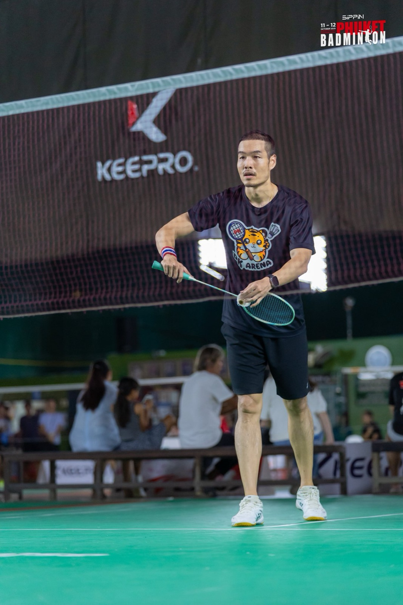
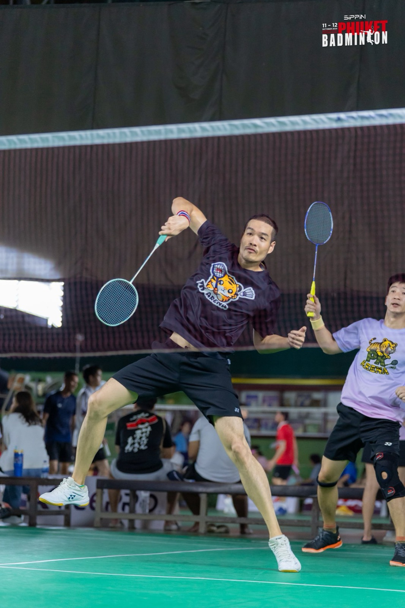
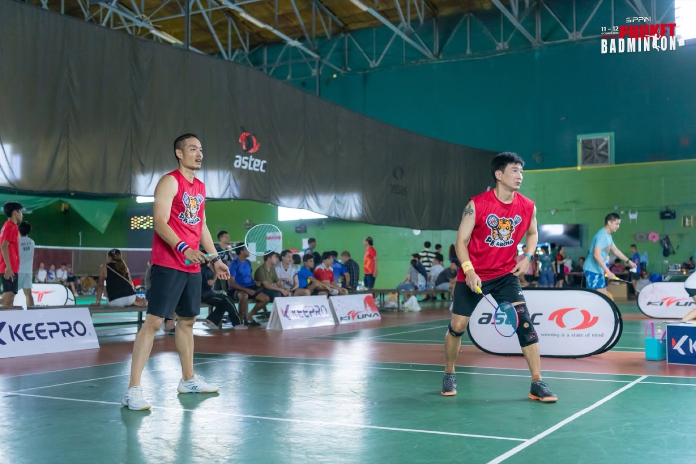
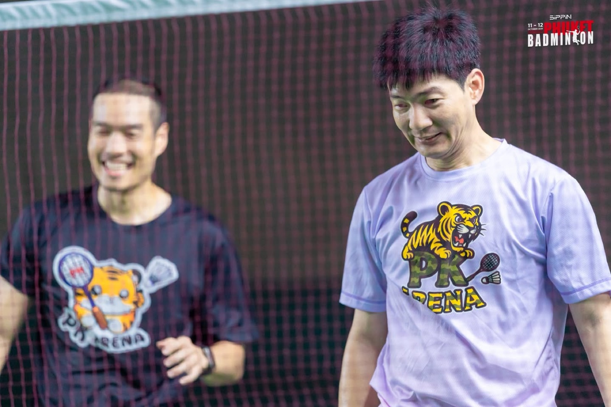
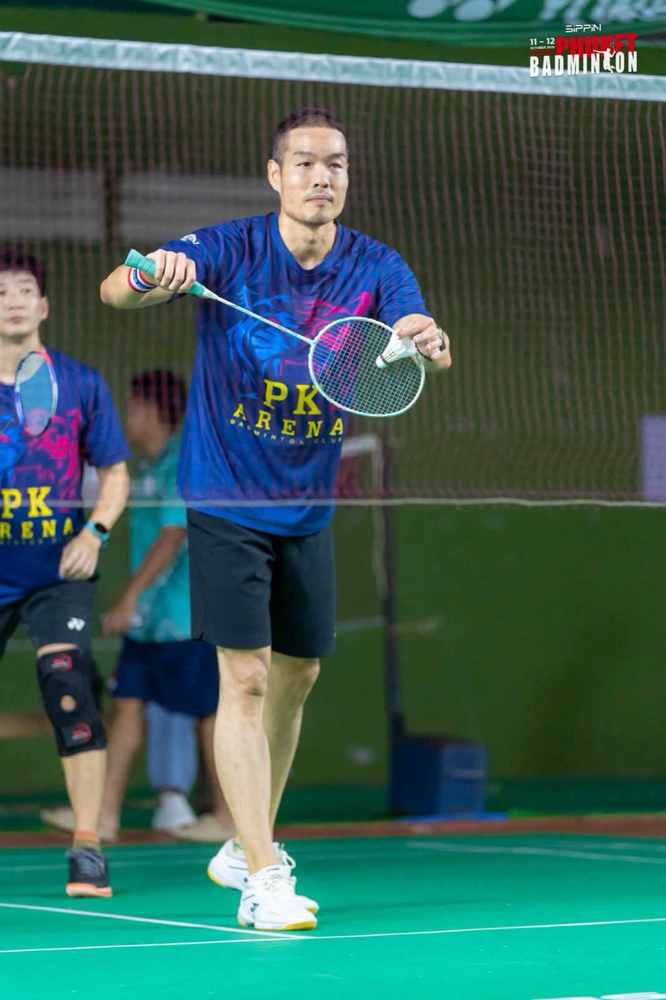
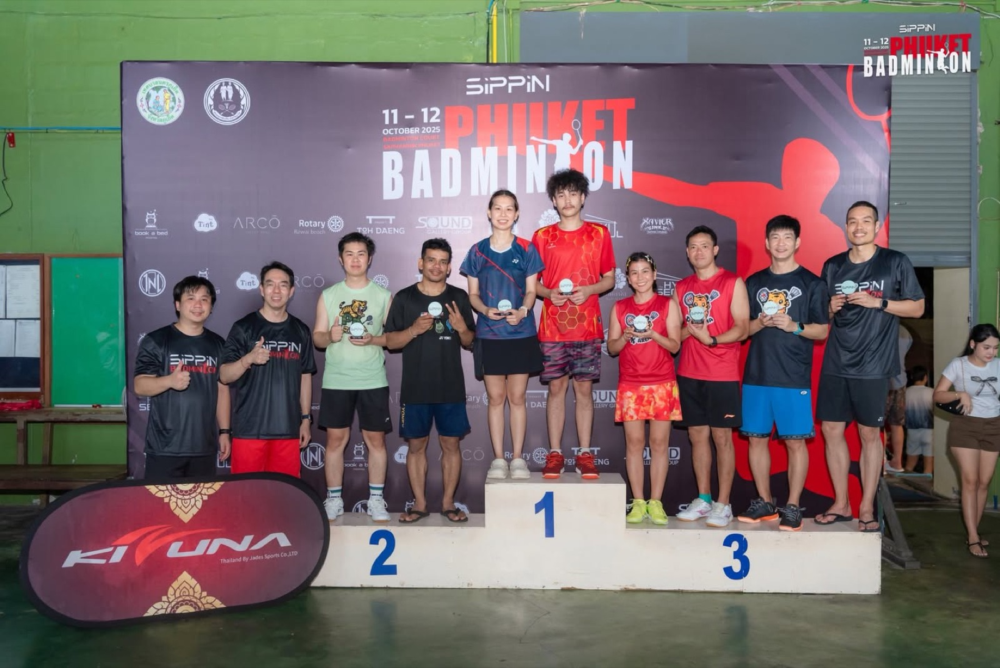

2025 · award · event
Wins joint third in the 90-plus doubles category at the Sippin tournament






Original text in Thai
คู่อาวุโสรุ่น 90 ปี ยังแจ๋วไม่เจียม 😂 จบที่ที่ 3 ร่วม มือตีโต้สายล่าง รายการ zippin 🥉🏆
ขอบคุณพี่เธียร์ พาร์ทเน่อร์ร่วมเป็นตะคริวกันแทบทุกรายการยกเว้นรายการนี้ ปลอดตะคริวทั้งคู่ 😇 แถมได้ถ้วยรางวัลหนวยเล็กกลับบ้านไปนอนกอดอีก 🥰
ขอบคุณตั้ม Sippin ที่จัดแบดรายการนี้ ทั้งๆ กะลังอยู่ในช่วงพักฟื้นผ่าตัดเข่า งานสนุกมาก บริหารจัดการระบบได้ดีสุดๆ ทีมงานเก่งครบเครื่อง 🏆🎉
ขอบคุณน้องแบด และทีม PK Areana ทั้งโค้ช ทั้งกองเชียร์ เกลือแร่ น้ำดื่ม จัดหนักจัดเต็ม อยู่กันจนจบงาน แถมรอบนี้ เหมาโพเดี้ยมมือตีโต้สายล่างด้วย 💪🔥
จะลงแข่งไปได้อีกนานแค่ไหนไม่รู้ รู้ว่าแค่ว่ามีความสุขทุกครั้งที่ได้ไปตีแบดกับเพื่อนๆ ขอบคุณมากมาย 😇❤️
#sippin 📌✨
#pkareana 🏆🎉
#longdaengPhuket 🧧
#tohdaengPhuket 🧧
#บ้านอาจ้อ ❤️